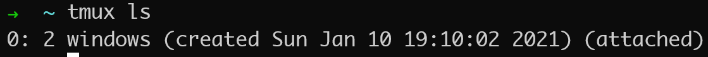
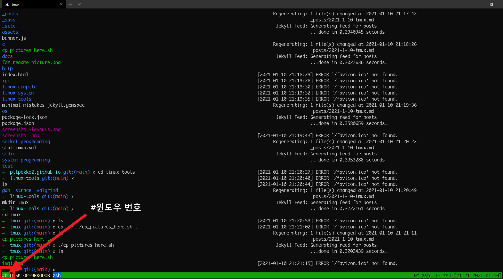
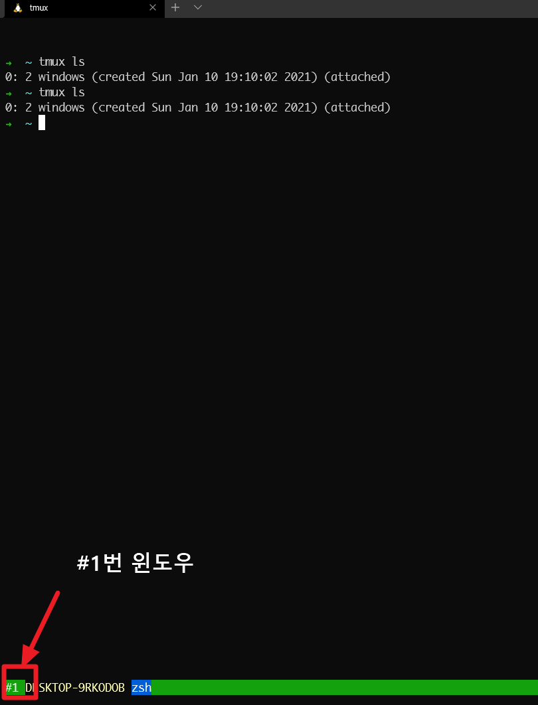

Tmux install
# ubuntu
$ sudo apt install tmux
# mac
$ brew install tmux
Tmux components
- session: tmux의 실행 단위. tmux의 각각의 프로세스라고 보면 편함

- tmux ls를 통해 조회한 실행 중인 tmux
- 0번 세션: 2개의 윈도우
- window: tmux로 보고 있는 하나가 윈도우임


- pane: 한 윈도우안에서 각 분할창
Tmux shortcut
- prefix key: tmux의 prefix키는 사용자 설정 마다 다르다.
- default:
ctrl + b
- 본인은 ` 키
session
- 새 세션 설정
$ tmux new -s <session-name>
- 세션 종료
- 열려 있는 tmux 세션들 조회
- 세션 detach (잠시 빠져 나감)
- 세션 attach
$ tmux a -t <session-num | session-name>
window
- 새 윈도우 생성
- 윈도우 이동
$ prefix + <option>
option:
0-9 window number
n next window
p prev window
l last window
w window selector
f find by name
- 윈도우 종료
$ prefix + &
or
$ ctrl + d
or
$ exit (해당 윈도우에서 모든 pane이 사라질 때 까지 계속 치면 됨)
pane
- pane 나누기
$ prefix + % : vertical 나누기
" : horizental 나누기
- pane 이동
- pane 삭제
$ prefix + x
or
$ ctrl + d
or
exit (해당 pane에서)
copy
- terminal copy모드 진입
- terminal 부분 복사
- terminal copy모드 나가기
$ q (terminal copy모드 내애서)
- copy 모드에서 복사한 것 paste
My setting
set-option -g mouse on
set-option -g history-limit 10000
unbind C-b
unbind l
set -g prefix `
bind-key o last-window
bind-key ` send-prefix
bind-key k kill-window
set -g default-terminal "screen-256color"
set -g history-limit 1000
#set -g status-left '#[fg=brightwhite]###I #[fg=brightyellow,bg=black]#(hostname) #[fg=brightwhite,bg=brightblue]#W'
set -g status-left '#[fg=colour015]###I #[fg=colour229,bg=black]#(hostname) #[fg=colour015,bg=colour026]#W'
set -g status-left-length 50
set -g status-right '[%H:%M %Y-%m-%d]'
#set -g status-right-bg brightwhite
set -g status-justify right
#set -wg window-status-bg brightwhite
set -wg window-status-current-format '#I#F #W '
set -wg window-status-format '#I#F #W '
set -wg mode-keys vi
bind P paste-buffer
bind-key -T copy-mode-vi v send-keys -X begin-selection
bind-key -T copy-mode-vi y send-keys -X copy-selection
bind-key -T copy-mode-vi r send-keys -X rectangle-toggle
bind r source-file ~/.tmux.conf
vim copy/paste
- vim에서 paste할 때, 계단현상 발생